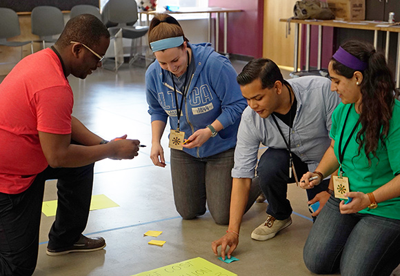

Dr. Helen L. Chen, member of Epicenter's FIGS research team, shares three questions for faculty to consider when designing experiences and documenting evidence of an entrepreneurial mindset in students.

by Dr. Helen Chen, research scientist at Stanford University and member of Epicenter's Fostering Innovative Generations Studies team. This article was originally posted on the KEEN blog. Learn more about KEEN at keennetwork.org.
June 9, 2015
According to the KEEN Framework, individuals who have an entrepreneurial mindset demonstrate curiosity, make connections across various sources in order to gain new insights, and create value by persisting through failure. Clearly, these skills cannot be learned in an individual course or project, i.e., it’s highly unlikely that a student will take Entrepreneurial Mindset 101, get a passing grade, and check off the box or indicate on their résumé possession of entrepreneurial mindset skills.
A variety of curricular and co-curricular activities contribute to the cultivation of an entrepreneurial mindset by providing a context for students to experiment with and apply the practices associated with these mindset outcomes over time. This developmental aspect is critical especially as we aim to create an ecosystem on our campuses that not only fosters but also sustains these mindset behaviors. Here are three guiding questions to consider when designing experiences and documenting evidence of an entrepreneurial mindset:
-
In thinking about the students at your institution, where and when are they exposed to opportunities to learn and apply the practices of an entrepreneurial mindset across the academic trajectory?
This question encourages a more holistic view of the entrepreneurial ecosystem, taking into account the situations and conditions by which entrepreneurial skills might be encountered and supported. This can include both formal, in-class projects and assignments as well as informal, out-of-class involvement in hackathons and pitch competitions. For example, Santa Clara University describes multiple curricular and co-curricular offerings for students to get involved in engineering innovation and entrepreneurship. Another lens by which to view these activities might be to tag or map them to the academic trajectory, such as a first year introductory seminar on creativity and innovation or a senior design capstone course.
Earlier this year, Epicenter’s research team administered the Engineering Majors Survey to juniors and seniors attending a nationally representative sample of 27 U.S. engineering schools. Designed to measure the range of entrepreneurial activities that may influence undergraduates’ beliefs about their ability to innovate, a planned follow-up in 2016 is intended to capture how engineering students’ interests and goals surrounding innovation change over time through both academic and workplace environments and experiences.
-
How are students prompted to reflect upon and integrate across these experiences with the intention of transferring the knowledge and skills they have learned from one context to another (e.g. from academia to industry)?
In “How People Learn: Brain, Mind, Experience and School” (2000), John Bransford and his colleagues differentiated between “adaptive experts, whose metacognitive skills allow the transfer of knowledge from one setting to another, and routine experts, whose expertise allows them to function well in standard settings but doesn’t serve them well when conditions are different.” In their poster at the 2015 KEEN Winter Conference, Dan Stuckey, J-D Yoder, and Eric Baumgartner’s interviews of 20 company executives found that employers “don’t trust grades” and “want to see students in the real world,” highlighting the challenges of educating adaptive experts. One potential solution is represented in a 2014 meta-analysis of 225 studies in the “Proceedings of the National Academy of Sciences” where active learning strategies and constructivist course designs were shown to increase student performance in STEM fields.
-
From the perspective of the faculty and staff as well as the students themselves, what does evidence of an entrepreneurial mindset look like? How can this evidence be represented and communicated to diverse stakeholders including, but not limited to, peers, faculty, prospective employers, and funders?
Stuckey, Yoder, and Baumgartner pose the question: “What can we do to convince industry our graduates have the entrepreneurial mindset?” While employers represent one stakeholder group who is interested in students with an entrepreneurial mindset, what kinds of methods and corresponding evidence would various stakeholders find persuasive and compelling? Don Carpenter from Lawrence Technological University draws upon extensive longitudinal survey data to assess the characteristics of an entrepreneurial mindset and is currently using focus groups to gather qualitative data on students’ perspectives on entrepreneurially mind learning.
Electronic learning portfolios (ePortfolios) represent another approach where, as partners in the assessment process, students use ePortfolios to document their learning first and foremost for themselves but these same portfolios can also be used to inform programmatic or institutional learning outcomes. Evaluation of these outcomes via the use of rubrics has been promoted by the Association of American Colleges and Universities’ Valid Assessment of Learning in Undergraduate Education (VALUE) initiative.
As we take a more nuanced examination of the where, when, how, and what related to entrepreneurial outcomes, evidence of mindset behaviors make the case for the “why” – why are these competencies valued and why would employers be willing to offer higher starting salaries for students who can demonstrate these skills? Collectively, this evidence of intellectual curiosity, integrative learning, and resilience serves to empower and guide students to more effectively communicate the “why” of their education to others.
What do you think? What do you consider evidence of an entrepreneurial mindset? What kinds of representations of evidence are produced in the learning experiences at your institution? How do you know whether a student has an entrepreneurial mindset (or not)?
About the author:
Dr. Helen L. Chen is a research scientist in the Designing Education Lab in the Department of Mechanical Engineering and the director of ePortfolio initiatives in the Office of the Registrar at Stanford University. Helen is also a member of Epicenter's Fostering Innovative Generations Studies (FIGS) research team. Learn more about FIGS.